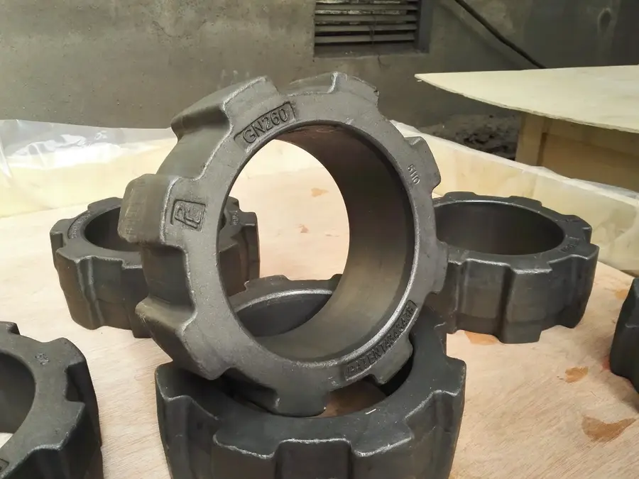
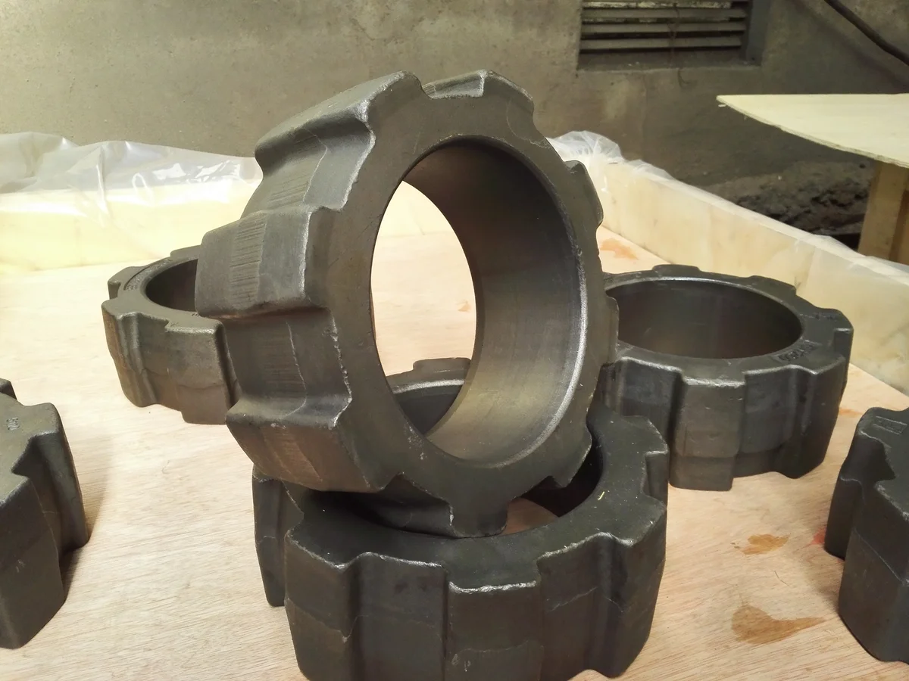
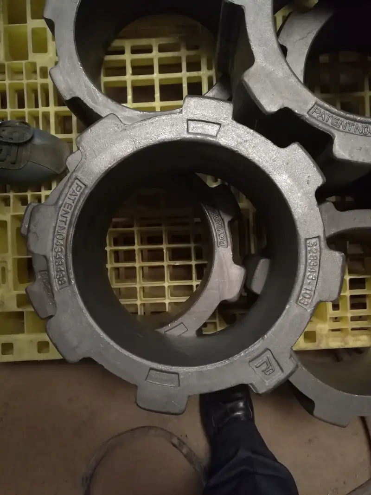
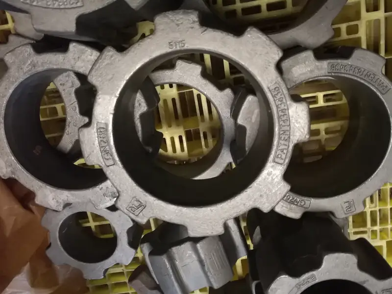
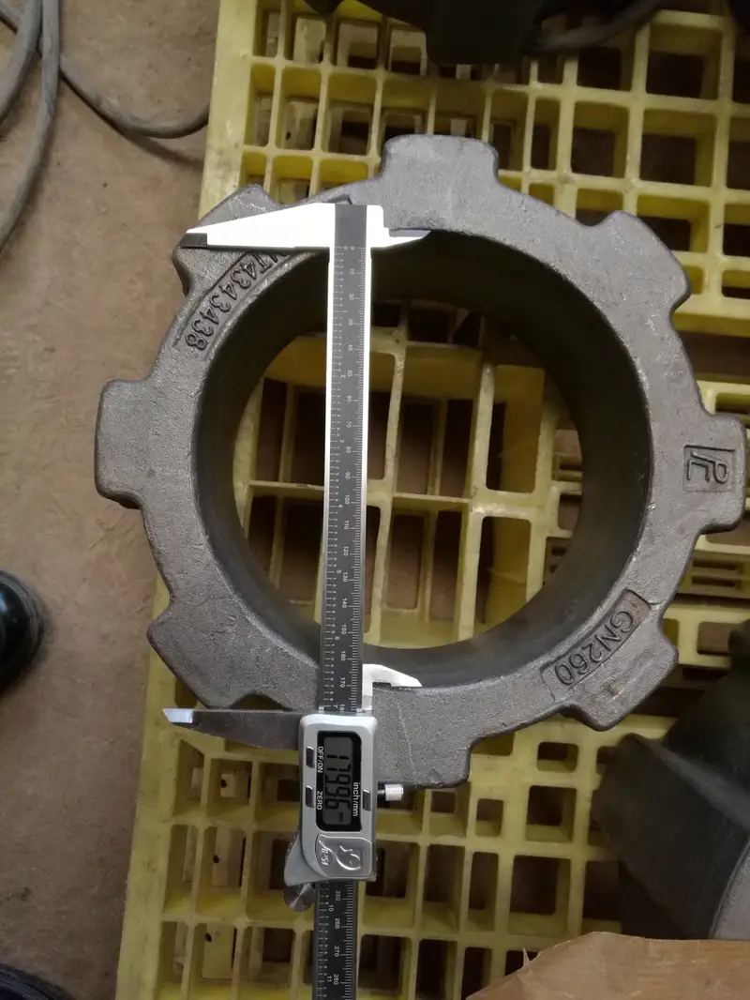
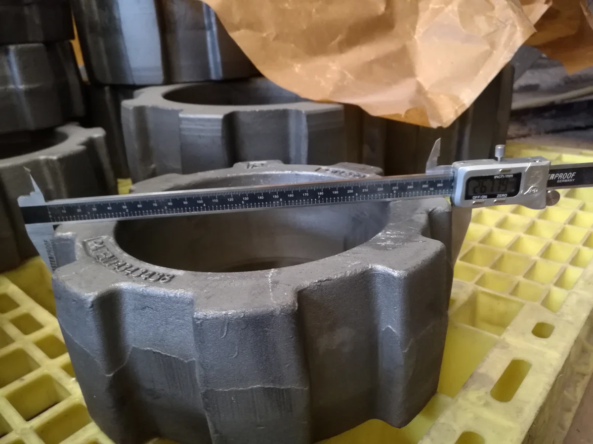
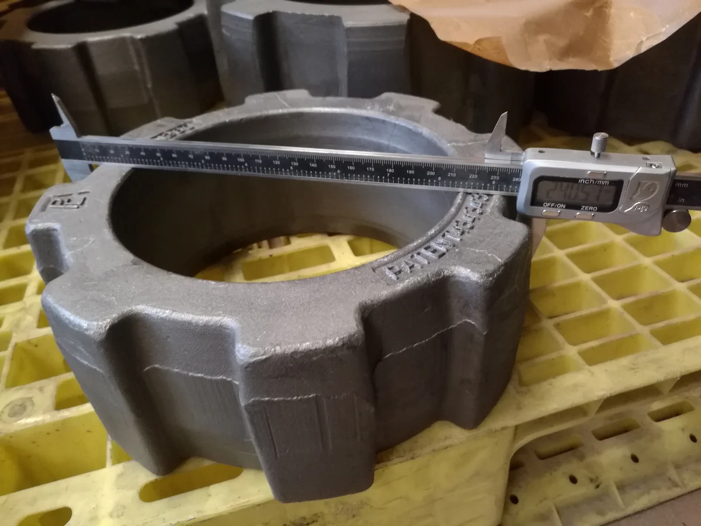

Overview
Technical Specs
Детали
Pennsylvania Crusher
Угледробилки CoalPactor
CoalPactor Pennsylvania — одновалковая роторная дробилка для угля. Компактная конструкция с лопаточными молотами. Anranst — лопаточные и кольцевые молоты, зубцы по стандартам ASTM.
Typical Applications
Factory
Галерея производства — Цех Anranst











Technical Data
Угледробилки CoalPactor — Модели
| Модели | Детали |
|---|---|
| Модели | CoalPactor series |
| Производительность | 50-1,000 tph |
| Размер питания | Up to 300mm |
| Размер продукта | 10-75mm |
Совместимые модели (каталог OEM)
BC 9-38 FBBC 15-44 FBBC 19-44 FBBC 23-44 FBBC 23-50 FBBC 707 FB30" X 40" (762 x 1016)30" X 50" (762 x 1270)30" X 60" (762 x 1524)30" X 72" (762 x 1829)30" X 84" (762 x 2134)30" X 100" (762 x 2540)30" X 120" (762 x 3048)CGU 27x20 Clinker CrusherCGU 33x30 Clinker CrusherCGU 543x43 Clinker CrusherCGA 2'-0" Clinker CrusherCGA 2'-10" Clinker CrusherCGA 3'-0" Clinker Crusher
Детали
Молотки: Mn сталь или Cr-Mo сплав. Ударные блоки: Ni-Hard или хромистый чугун.
Детали
Угледробилки CoalPactor Детали
Модели
Various
Детали
Молотки, ударные блоки
Лопастной молот / ударный молот
Высокоскоростные молотки CoalPactor BC; удар + сдвиг для угля на ТЭС
AISI 4150HAISI 4150H / Forged Cr-Mo alloy steel
ТвёрдостьHRC 45-56
ВязкостьAKV ≥ 20J
Прочность≥ 1000 MPa
Текучесть≥ 800 MPa
| Grade | C | Si | Mn | Cr | Mo | Ni |
|---|---|---|---|---|---|---|
| AISI 4150H | 0.47-0.54 | 0.15-0.35 | 0.65-1.10 | 0.75-1.20 | 0.15-0.25 | — |
Кованая структура с превосходной усталостной стойкостью; для высокоскоростных молотковых дробилок
Mn13Cr2ASTM A128 Grade B-2 / GB ZGMn13-2
ТвёрдостьHB 210-260 (work-hardens to HRC 45-55)
ВязкостьAKV ≥ 80J
Прочность≥ 750 MPa
Текучесть≥ 380 MPa
| Grade | C | Si | Mn | Cr | Mo | Ni |
|---|---|---|---|---|---|---|
| Mn13Cr2 | 1.05-1.20 | ≤1.0 | 11.5-14.0 | 1.5-2.5 | — | — |
Отличная способность к наклёпу; поверхностная твёрдость повышается под ударной нагрузкой
ASTM A128 Grade B-2ASTM A128 Grade B-2 / Hadfield high-manganese steel
ТвёрдостьHB 185-210 (work-hardens to HRC 48-55)
ВязкостьAKV ≥ 120J
Прочность80-120 KSI (550-830 MPa)
Текучесть50-57 KSI (345-393 MPa)
| Grade | C | Si | Mn | Cr |
|---|---|---|---|---|
| ASTM A128 Grade B-2 | 1.05-1.20 | ≤1.0 | 11.5-14.0 | ≤0.5 |
Опция наклёпа для угольного дробления; твёрдость поверхности увеличивается при ударе
Сито / колосник
Разгрузочное сито CoalPactor; сменная изнашиваемая деталь
Mn13Cr2ASTM A128 Grade B-2 / GB ZGMn13Cr2
ТвёрдостьHB 210-260 (work-hardens to HRC 45-55)
ВязкостьAKV ≥ 80J
Прочность≥ 750 MPa
Текучесть≥ 380 MPa
| Grade | C | Si | Mn | Cr |
|---|---|---|---|---|
| Mn13Cr2 | 1.05-1.35 | ≤1.0 | 11.0-14.0 | 1.5-2.5 |
Стандартная наклёпываемая сталь; экономичный выбор для умеренных нагрузок
Mn18Cr2ASTM A128 Grade B-4 / GB ZGMn18Cr2
ТвёрдостьHB 230-300 (work-hardens to HRC 48-58)
ВязкостьAKV ≥ 60J
Прочность≥ 800 MPa
Текучесть≥ 420 MPa
| Grade | C | Si | Mn | Cr |
|---|---|---|---|---|
| Mn18Cr2 | 1.05-1.35 | ≤1.0 | 16.0-19.0 | 1.5-2.5 |
Улучшенный наклёп; на 20-30% дольше Mn13 при высоком сжатии
Почему Anranst
- Кованые молотки AISI 4150H для CoalPactor BC 9-38-BC 23-44; совместимость с DuraLife XP/AP
- Реверсивная конструкция с 4 рабочими углами; на 60% дольше
- Полное покрытие CoalPactor: BC 9-38-BC 23-44, Type K, FBR